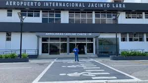
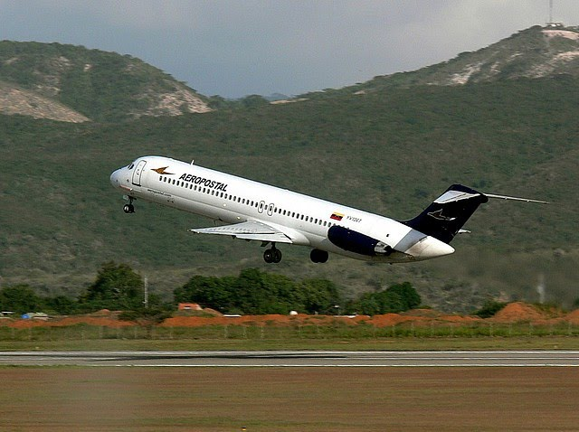
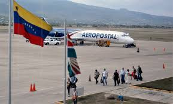
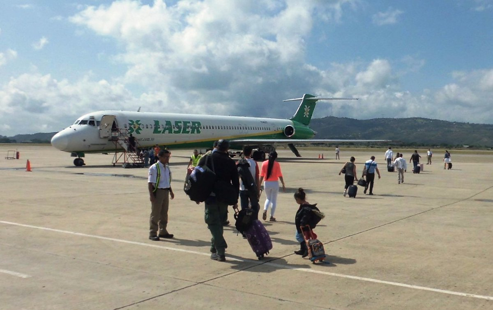

Desarrollar y prestar servicios aeroportuarios que satisfagan la necesidad de quienes dispongan de los terminales aéreos del Estado Lara, así mismo cooperar con el crecimiento, económico, comercial y turístico de la entidad.
Administrar y mantener los Aeropuerto existentes en el Estado Lara, como ente administrador y promotor de la calidad de servicio que presta, adaptándose a las exigencia de los usuarios y mantener un alto grado de competitividad con el resto de las terminales aéreas del territorio Nacional e Internacional. En la humanización de los espacios públicos, promover el bienestar social y mejorar la calidad de vida del pueblo larense y visitante contribuyendo a la imagen del Estado Lara.
Es un aeropuerto venezolano ubicado en la ciudad de Barquisimeto, Estado Lara. Es el séptimo en importancia del país. Sirve como puerta de entrada a la Región Centro Occidental, conformada por los estados Lara, Portuguesa y Yaracuy.
Hoy en día transitan gran cantidad de pasajeros con destino a la ciudad de Caracas. Posee una gran ventaja geográfica para la ejecución de viajes a Miami y Aruba, por ser uno de los aeropuertos más próximos a estos lugares, incluso más que el principal terminal aéreo de Venezuela, el Aeropuerto Internacional Simón Bolívar, ubicado en Maiquetía.
1-Administrar, organizar, conservar, supervisar, acondicionar y mantener las instalaciones, áreas y demás espacios civiles y militares de los aeropuertos del estado Lara, cuidando en todo momento de las condiciones, calidad, seguridad, eficiencia, disponibilidad y permanente modernización de las mismas.
2-Planificar, elaborar y/o ejecutar estudios, proyectos u obras relacionadas con el mantenimiento y los servicios que prestan los aeropuertos del estado, de acuerdo con el plan de aeropuertos que tenga tanto el Órgano regional como el Ministerio del Poder Popular con competencia en la materia, para así lograr la optimización de la prestación de los servicios aeroportuarios.
3-Mejorar con la continuidad necesaria los servicios que se prestan al público en los aeropuertos y de las actividades comerciales que de ellos se deriven.
4-Mantener un enlace permanente con la autoridad aeronáutica y demás aeropuertos, tanto nacionales corno extranjeros, para prestarle o solicitarle según sea el caso, la cooperación que requieran las necesidades de tráfico aéreo.
